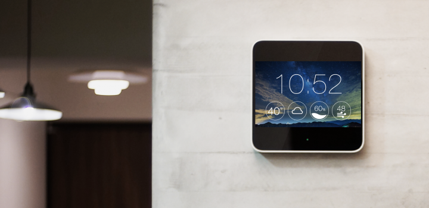

pecifications of Robotic Gadgets SmartBot2.0W (White)
Technical Details
BODY
Indicators Robotic Self Diagonostic
Wheels Yes
Other Body Features Extra Dirt Sensor,Wall following sensors, Robotic Virtual Wall Detection sensor, Self Charging sensor, Gyro Sensor, Speed Adjust according to cleaning , Robotic obstacle detection sensor, Pre-scheduled Cleaning, Self Diagnosis, Robotic Stair detection sensor
GENERAL
Filter HEPA
Dust Collecting Feature Bagless with 0.35 Capacity
Type Robotic Floor Cleaner
Sound Level 55 dB
DIMENSIONS
Weight 63 g
Other Dimensions Dimensions: 37.9 x 46.5 mm
Price: Rs. 2,590.00